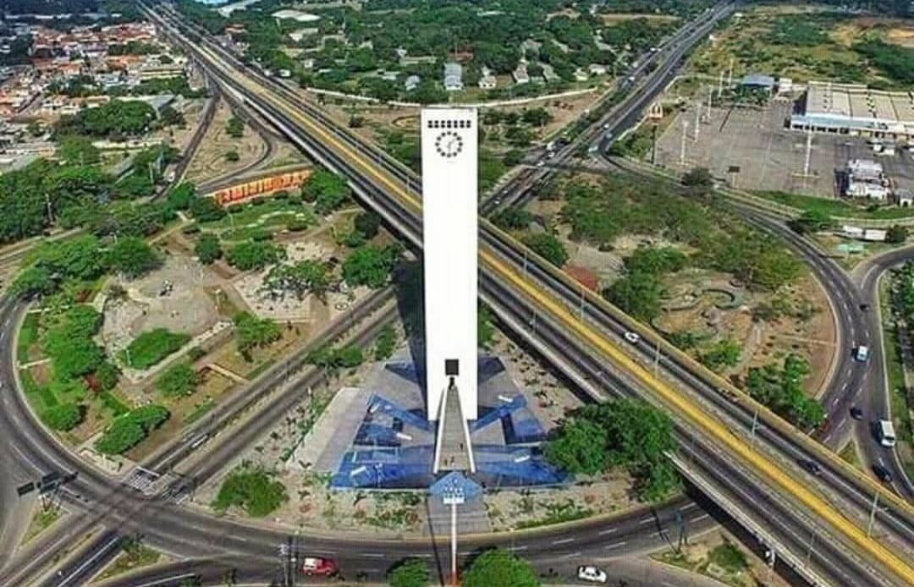
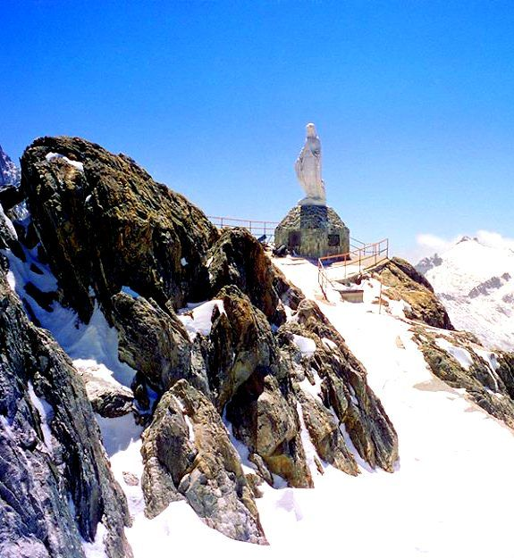
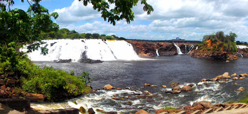

Bandera de Venezuela. Consta de 3 franjas de color amarillo,
azul y rojo; el escudo nacional
en la parte superior izquierda y 8 estrellas en la franja central.
Moneda nacional
La moneda oficial de Venezuela es el Bolívar, sin embargo
existe un gran uso del Dólar Estadounidense.
Símbolo del Bolívar venezolano.
Región y Zona horaria
Venezuela se encuentra en la región de América del Sur y su Zona horaria es UTC-4.
Población a nivel nacional
La población a nivel nacional es de 30.110.044 habitantes aproximadamente.
Divisiones territoriales
Venezuela se divide en Entidades Federales: 23 Estados, el Distrito Capital y
se incluyen también las Dependencias Federales y los Territorios Federales,
además posee una Zona en Reclamación.
Estado Lara
El estado Lara está situado al occidente de Venezuela, siendo sus límites:
Al norte con el estado Falcón, al sur con los estados Trujillo y Portuguesa; al este con Yaracuy y Portuguesa
y al oeste con el estado Zulia.
Su nombre le fue dado en conmemoración al héroe de la Independencia, el General Jacinto Lara, oriundo de la ciudad de El tocuyo.
Su capital es la pujante ciudad de Barquisimeto, fundada en l552 por el conquistador español Juan de Villegas.

Obelisco de Barquisimeto, Estado Lara.
Población
La población del Estado Lara es de aproximadamente 2.142.583 habitantes.
Superficie
El Estado Lara tiene una superficie aproximada de 19.800 kilómetros cuadrados.
Atracciones turísticas
La Cascada del Vino:
Es una caída de agua ubicada en el parque nacional Dinira,
en los límites del municipio Morán del Estado Lara,
dentro de la serranía de Barbacoa, un conjunto montañoso que es parte de la
región más oriental de los Andes venezolanos. La caída de agua cuenta con la
peculiar característica que el río posee un matiz de color vinotinto producto
de un compuesto orgánico la antocianina y del ácido tánico derivado de las raíces
de los árboles que rodean la quebrada a lo largo de su trayecto que allí se
encuentran con el material ferroso que se desprende de las aguas.
Cascada del Vino.
Catedral de Barquisimeto:
Ubicada en centro de la ciudad de Barquisimeto, la Catedral de Nuestra Señora del Carmen,
conocida popularmente como Catedral de Barquisimeto, es una de las iglesias más llamativas de toda Venezuela,
principalmente por su estilo modernista y forma no convencional, que vista desde arriba posee la forma de una cayena,
una de las flores más conocidas en el país. La iglesia cuenta con jardines y un campanario externo;
mientras que su interior esta decorado con vitrales de diferentes advocaciones de la Virgen María;
cabe destacar que la iglesia posee un total de tres altares, siendo estos el altar mayor,
el altar menor y la cripta del templo.
Catedral de Barquisimeto.
Cubiro:
Pueblo localizado en las montañas al sur de Barquisimeto.
En él se puede disfrutar de un agradable clima y de hermosas construcciones que rodean el lugar.
El paseo a este pueblo es muy llamativo, sobretodo para los barquisimetanos por la cercanía a la ciudad,
los cuales lo visitan de forma masiva los fines de semana.
Lomas de Cubiro.
Estado Mérida
El estado Mérida está ubicado en el occidente de Venezuela.
Limita al norte con los estados Zulia y Trujillo, al sur con Táchira y Barinas,
al este con Trujillo y Barinas y al oeste con Táchira y Zulia.
Su capital es la Ciudad de Mérida.

Sierra Nevada, Estado Mérida.
Población
La población del Estado Mérida es de 1.031.017 habitantes aproximadamente.
Superficie
El Estado Mérida tiene una superficie aproximada de 11.300 kilómetros cuadrados.
Atracciones turísticas
Teleférico Mukumbarí:
Es el teleférico más alto y segundo más largo del mundo,
además posee 12,5 Kilómetros de trayecto,
alcanzando una altura de 4.765 metros sobre el nivel del mar.
Teleférico Mukumbarí, también conocido como Teleférico de Mérida.
Parque Nacional Sierra Nevada:
Conocido por su impresionante belleza natural y su diversidad ecológica.
Fundado en 1952, este parque protege la Sierra Nevada de Mérida en la cordillera andina,
incluyendo el Pico Bolívar, el punto más alto de Venezuela.
Los visitantes pueden disfrutar de actividades como senderismo,
escalada y explorar la diversa fauna y flora del parque.
Pico Bolívar en el Parque Nacional Sierra Nevada.
Plaza Bolívar:
Plaza Bolívar, Estado Mérida.
Estado Bolívar
El estado Bolívar, se encuentra ubicado en la región suroriental del país, o sea en la Guayana venezolana,
su nombre se debe como homenaje a El Libertador Simón Bolívar. Sus límites: al norte, separado por el río Orinoco,
con los estados, Delta Amacuro, Monagas, Anzoátegui y Guárico; al sur con la República del Brasil y el estado Amazonas;
al este con el estado Delta Amacuro y la Zona en Reclamación
que separa al país con la República de Guyana y al oeste, con los estados Apure y Amazonas.
El estado Bolívar, en cuanto a su superficie es el más grande y equivale a un poco más de la cuarta parte del territorio.

Parque La Llovizna, Estado Bolívar.
Población
La población del Estado Bolívar es de aproximadamente 2.795.353 habitantes.
Superficie
El Estado Bolívar tiene una superficie de aproximadamente 238.000 kilómetros cuadrados.
Atracciones turísticas
Salto Ángel:
Es la cascada más alta del mundo, con una altura de 979 m (807 m de caída ininterrumpida). Está ubicado en el parque nacional Canaima,
Estado Bolívar, Venezuela. Es un espacio natural protegido, al ser declarado Parque Nacional el 12 de junio de 1962 y
Patrimonio de la Humanidad por la Unesco en 1994, que se extiende sobre un área de más de 30.000 km², hasta la frontera con Brasil
y el territorio del Esequibo.
Salto Ángel, Estado Bolívar.
Salto Pacheco:
Es una caída de agua localizada en el área protegida conocida como Parque Nacional Canaima,
al sureste de Venezuela. Se caracteriza por ser una cascada clara en el medio de un bosque muy verde,
además resaltan los colores y formas de sus rocas y pozos de agua.
Salto Pacheco, también conocido como Cascada Pacheco.
Museo de Arte Jesús Soto:
Este museo surge por el deseo de este artista venezolano de promover el arte y la cultura en su tierra natal,
donde para entonces no existían museos de este tipo ni galerías de arte; así que decide llevar a una de las
ciudades de mayor tradición histórica en Venezuela, un museo vanguardista que tiene 700 obras de Jesús Soto
y la de otros 130 artistas internacionales.